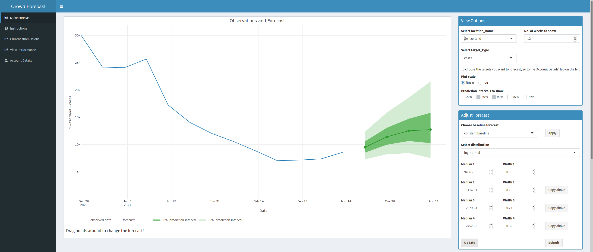

Crowdforecastr is a research project created by the Epiforecasts group at the London School of Hygiene & Tropical Medicine.
Via a web-app forecasters can submit weekly predictions for Covid-19 case and death numbers.
Currently we are collecting forecasts for 32 European countries and submit them to the European Forecast Hub every week. Since October 2020 we have been submitting forecasts for Germany and Poland to the German and Polish Forecast Hub. These models are then directly compared against computer models, making this a unique effort to compare humans against computer algorithms.
The crowdforecastr app is written in R shiny and can easily be adapted to new projects. Please get in touch if you would like to set up a similar app.
From here you can
- learn more about how to become a (better) forecaster
- go directly to the crowdforecastr app
- look at our evaluation of European Forecasts
- look at our evaluation of past German and Polish Forecasts
- see the app source code on github